Your next project
Reserved slotReady for whatever comes next — duplicate a gallery card (and its matching detail section) in index.html.
WELCOME TO MY PAGE · KATRIANA'S PORTFOLIO
I'm a Biomedical Engineering student at the University of Minnesota–Twin Cities. I have a passion for medical device development and learning new skills!
AREA · 01 OF 05 · ABOUT ME
Hello! My name is Katriana. I completed my Bachelors in Biomedical Engineering at the University of Minnesota Twin Cities College of Science and Engineering. Thanks for popping by my page.
Since I was a kid, I always wanted to work in the medical field to help people. Then, I discovered FIRST Robotics and absolutely fell in love with the creative problem solving that comes with working on a team for a multifaceted system. Biomedical Engineering immediately drew me in with its patient focused approach to engineering. I believe empathy and understanding the unmet needs of the patient populations are crucial. Ultimately, the patient experience and their quality of life seeing robust improvement is what I strive for. I am also a lifelong learner and am always looking to connect wtih peers and mentors to learn as much as I can!
AREA · 02 OF 05 · PROJECT ARCHIVE
Medical-device design and computational-modeling projects from my BME coursework and competitions. Click any card for the full write-up, figures, and documents.
Ready for whatever comes next — duplicate a gallery card (and its matching detail section) in index.html.
PROJECT ARCHIVE · 01
Real-time bowel-tissue viability assessment using electrical impedance spectroscopy (EIS).
Physicians Inspired Engineering Solutions (PIES) research program, Fall 2024–Spring 2025, with Asher Shertok, Rebecca Kroll, Cassandra Doshi, and Aaron Lorenz — Advisor Dr. Datario. Carried forward (2025–2026) with Asher Shertok and Jason Jensen.
MY CONTRIBUTION — PRODUCT DEVELOPMENT DIRECTOR
Acute mesenteric ischemia is one of the most lethal surgical emergencies, with mortality of 50–80%. Surgeons must distinguish viable from non-viable bowel: under-resection risks sepsis, while over-resection causes Short Bowel Syndrome, which carries a lifelong treatment cost above $150,000 per patient. Up to 25% of suspected-ischemia patients undergo a “second-look” operation to re-check borderline tissue, adding roughly $25,000 each. Today that call is made with visual inspection, palpation, and ICG fluorescence dye — a consumable that measures blood flow rather than cellular structure, costs $150+ per use, and requires darkening the room.
Ischemia breaks down cell-membrane integrity and ion gradients, which measurably lowers tissue electrical impedance. The probe measures voltage across the bowel surface; a controller computes impedance, classifies viability, and drives a dual-mode output — a green light for viable tissue, or a red light plus an alarm for non-viable tissue. The proof-of-concept signal chain is a voltage divider with a 100 Ω precision reference resistor, a high-impedance buffer, a precision “super-diode” rectifier (which removes the 0.7 V diode drop for low-amplitude biological signals), and an RC low-pass filter feeding a microcontroller. Literature places the optimal measurement frequency near 1 MHz. Each reading takes under five seconds and uses no consumables.
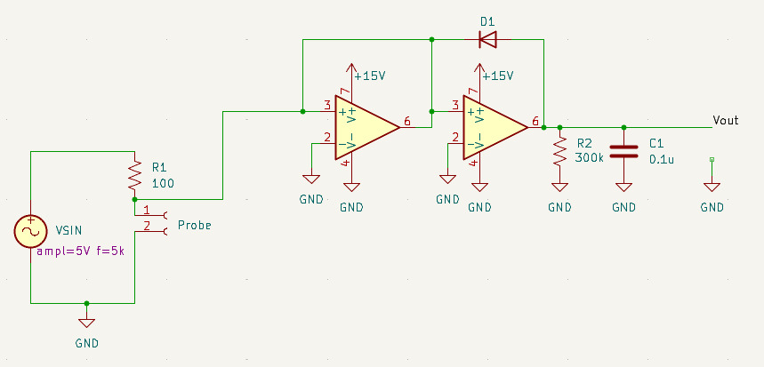
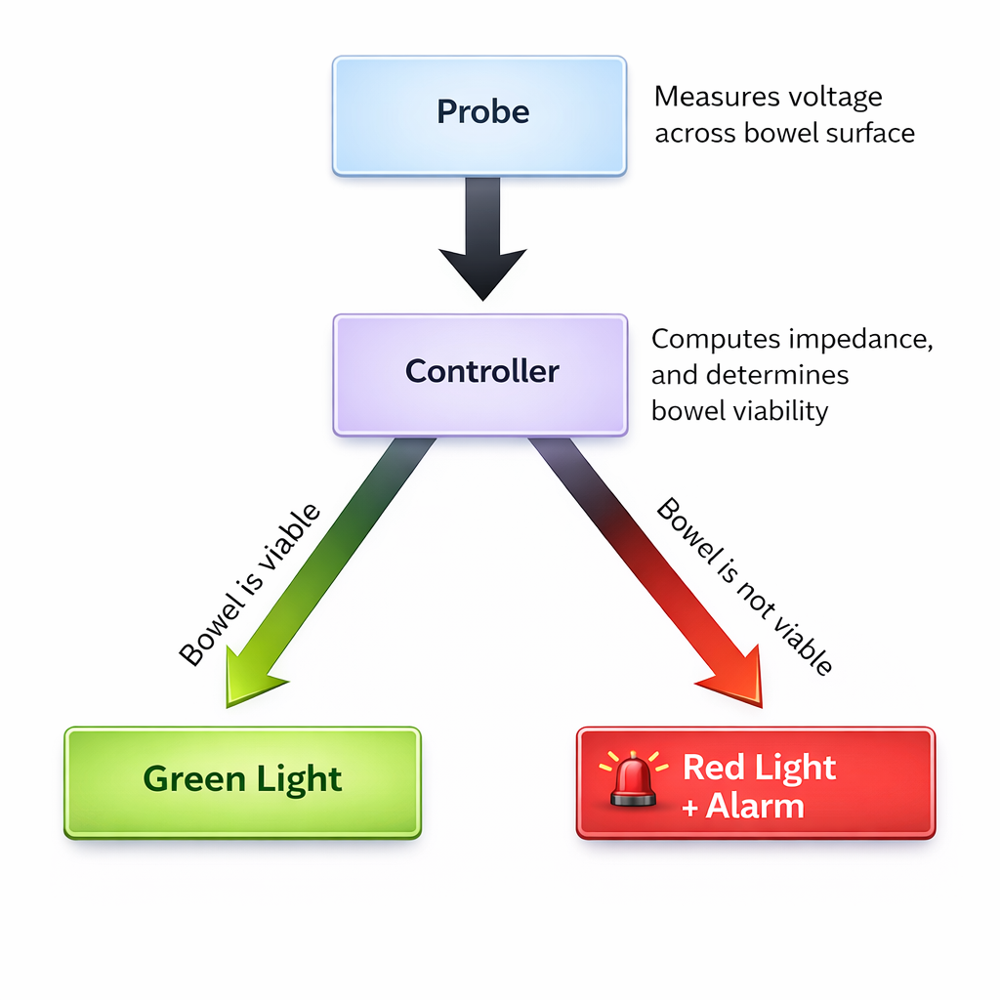
SOLIDWORKS handle studies used literature-based ridges and grooves for grip (41 mm diameter, 140 mm length). Prototype 1 of the probe body uses single-use bipolar electrodes. Bench testing on resistors and skin measured a skin resistance of about 45 kΩ, within literature values. A key limitation from the Spring 2025 build: the current sensors on hand (INA219, CS70331, INA333) resolved only to ~50 A — far coarser than the sub-milliamp, tissue-safe range — so the proof-of-concept read near 0 A. The next step is a higher-resolution current sensor for live-tissue testing.
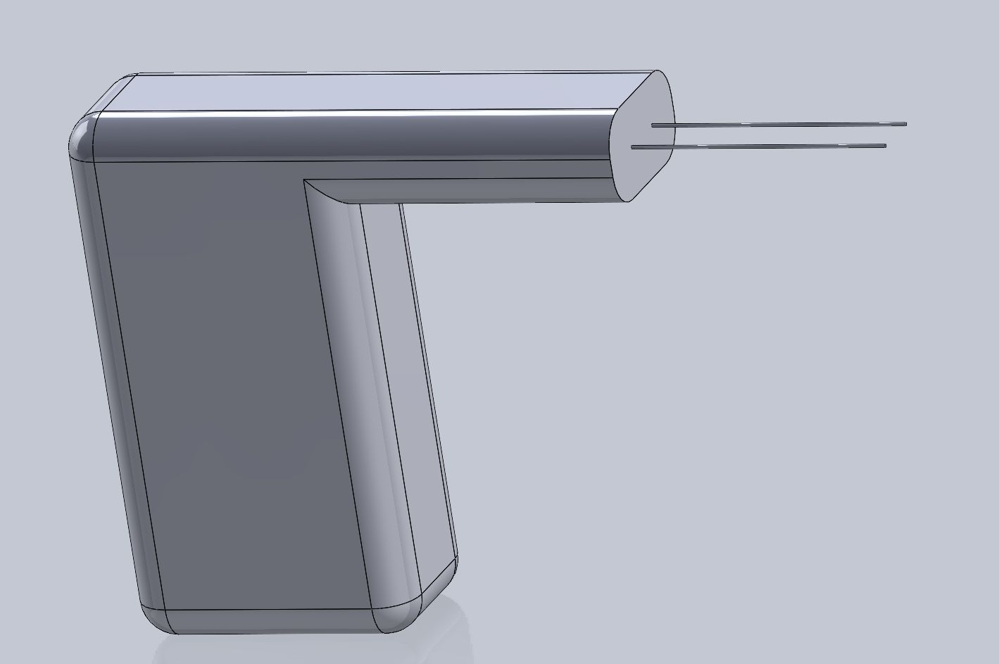
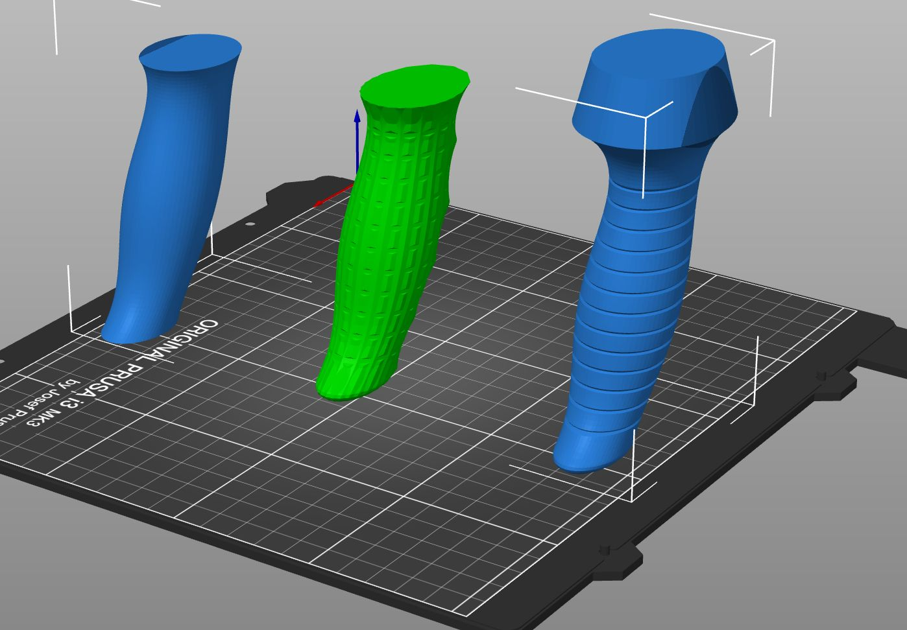
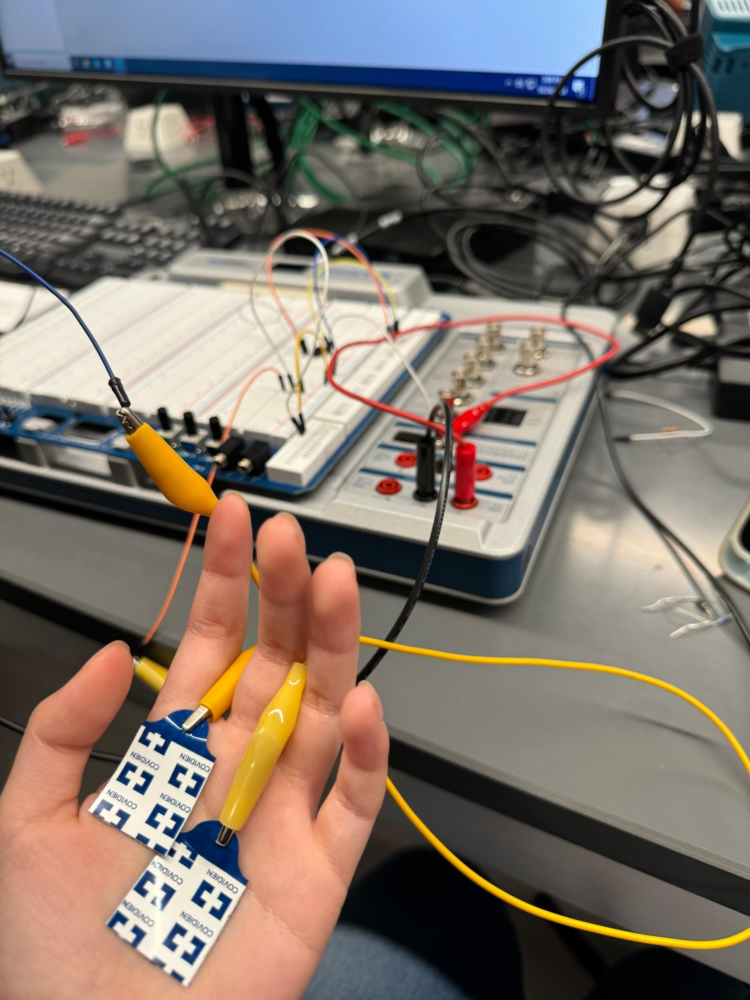
Johns Hopkins CBID Device Design Competition — written submission (2026)
Open in a new tab / download ↗Johns Hopkins CBID Device Design Competition — presentation
Open in a new tab / download ↗Viable Bowel Probe — research poster (Spring 2025)
Open in a new tab / download ↗PROJECT ARCHIVE · 02
An assistive device that lets pelvic-organ-prolapse patients safely remove their own Gellhorn pessary.
UMN Biomedical Engineering Senior Design capstone, Fall 2025–Spring 2026, with Elizabeth Ngo, Jennifer Cook, Julia Gross, Sanab Abdi, and Sophia Zafari. Industry advisors: Dr. Paul Emerson, Shruti Iyer.
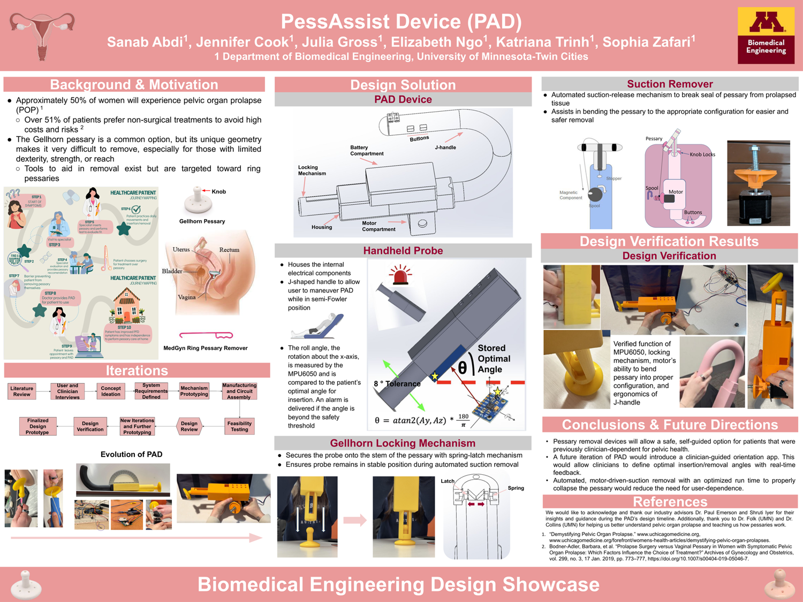
MY CONTRIBUTION
About half of women experience pelvic organ prolapse, and more than 51% prefer non-surgical management with a pessary. The Gellhorn pessary's geometry makes self-removal very difficult — especially for patients with limited dexterity, strength, or reach — and existing removal aids only fit simpler ring pessaries. That leaves many patients dependent on a clinician for routine pessary care.
PAD has three subsystems. A handheld J-handle probe houses the electronics and is shaped so the user can maneuver it while in a semi-Fowler position. A Gellhorn locking mechanism uses a spring-latch to grab the pessary stem and hold position throughout removal. An automated suction remover is motor-driven: it breaks the seal between the pessary and the prolapsed tissue and helps bend the pessary into a shape that is easier and safer to withdraw. An MPU6050 IMU measures the roll angle (rotation about the x-axis, θ = atan2(Ay, Az) · 180/π) against a patient-specific optimal insertion angle, sounding an alarm outside an 8° tolerance.
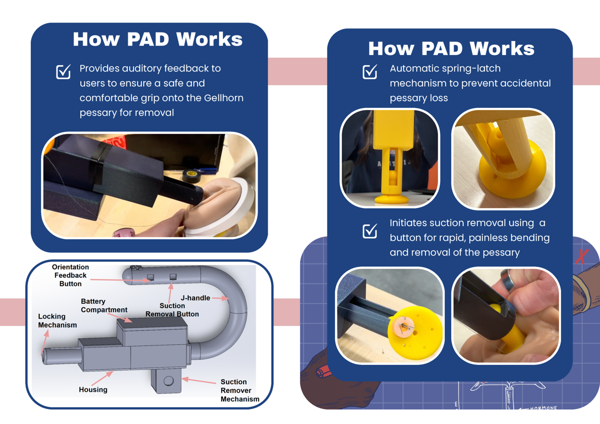
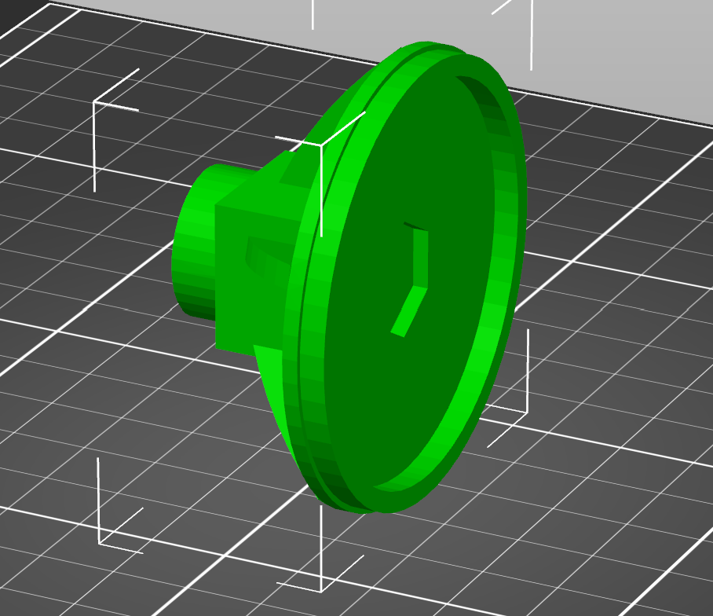
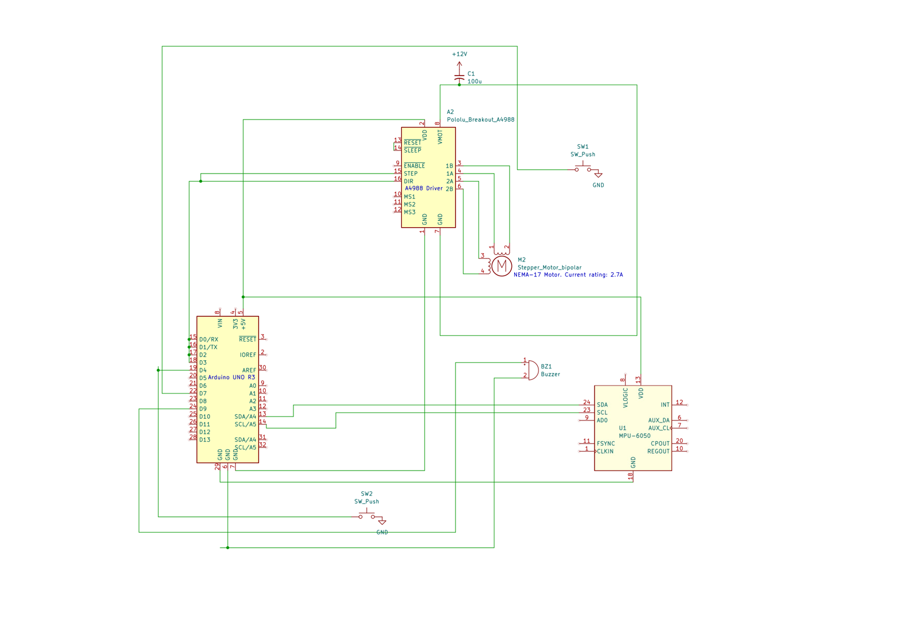
The team verified IMU angle sensing, the spring-latch locking mechanism, the motor's ability to bend the pessary into the proper configuration, and the ergonomics of the J-handle. The prototype evolved from hand-held concept mockups through breadboarded electronics to a working integrated build.
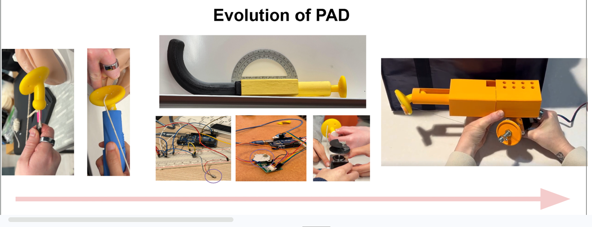
A clinician-guided orientation app would let providers define optimal insertion/removal angles with real-time feedback, and an optimized automated-suction run-time would further reduce reliance on user technique.
BME Senior Design Showcase poster (2026)
Open in a new tab / download ↗PROJECT ARCHIVE · 03
A BeReal-style social app that turns daily sustainability challenges into a game.
Nicholas Breitling, Parker Hitchcock, Katriana Trinh — TonkaHacks 2022.
Behavioral research (Alex Laskey's TED talk) shows that social proof — “your neighbors are already doing this” — changes behavior more than appeals to money or morality, and social media measurably amplifies climate awareness. So the goal was to make being sustainable social, visible, and fun.
Every user gets the same daily challenge — for example “take public transit or carpool today” or “recycle a plastic or paper product.” Users post a photo, build streaks for consecutive days completed, and see their friends' streaks. A navigable 3-D map lets you click a friend's profile and view their most recent photos at the locations where they were taken. Target audience: teens and young adults. Envisioned next steps included a community-events feed with achievement badges and map trees that grow with your streak.
TonkaHacks 2022 — project write-up
Open in a new tab / download ↗PROJECT ARCHIVE · 04
Machine-learning models that screen for depressive disorder from five minutes of resting-state EEG.
Jennifer Cook, Yaqub Hashi, Katriana Trinh, Ibrahim Halim — BMEN 5413, Neural Decoding & Interfacing.
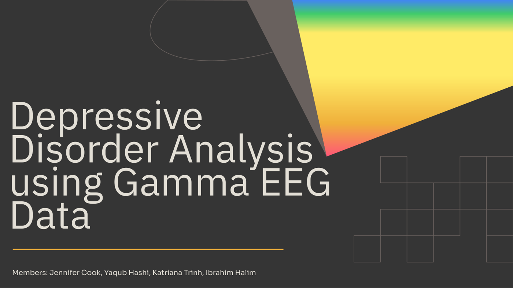
About 5.7% of adults have depressive disorder, and diagnosis still relies on self-report and psychiatric evaluation, which are subjective and confounded by comorbidity. Reduced gamma-band EEG activity is an emerging, comparatively consistent biomarker — it holds across symptom severity, medication, comorbid anxiety, and demographics — making resting-state EEG an appealing, task-free, unbiased signal.
The pipeline filters the EEG, converts it to the frequency domain by FFT, isolates the gamma band, and computes power spectral density and coherence for every bipolar channel. After removing NaNs, downsampling for efficiency, and a train/test split, three classifiers were trained and compared: a multilayer perceptron, a random forest, and XGBoost, followed by feature down-selection and regularization.
The MLP struggled (ROC-AUC 49%, d′ 0.16). Random forest did better (72%, d′ 0.77), and a tuned XGBoost was best (74%, d′ 1.24) with 93% recall on depressed patients but only 42% on healthy controls. Coherence features mattered more than raw power, and the parietal and occipital regions were most informative. IQ and age acted as confounders, and every model was biased toward the depressed class because healthy controls were under-represented.
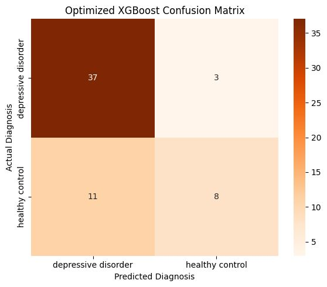
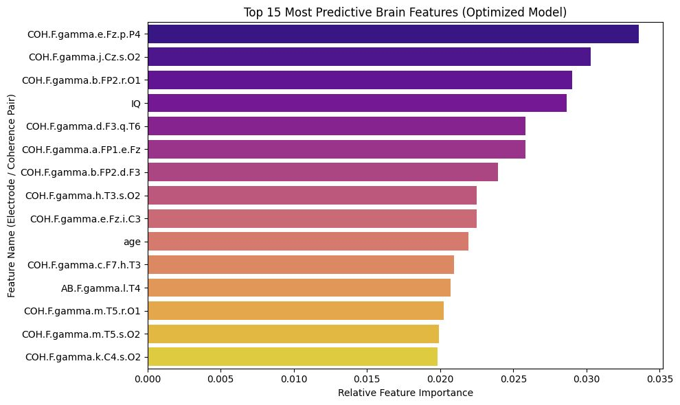
Collect more healthy controls, add other frequency bands (delta, theta, alpha), test on a larger and cross-population sample, and explore additional network architectures.
Final project presentation
Open in a new tab / download ↗PROJECT ARCHIVE · 05
Time-resolved analysis of intracranial local field potentials during a cognitive-conflict task.
BMEN 5413. Data courtesy of the Herman-Darrow Lab, used with permission and not redistributed.
For every channel and time point, the analysis tests whether band amplitude discriminates low- versus high-conflict trials (AUC, converted to d′). It then pools channels into time-resolved linear models — HAA ~ conflictLevel + reactionTime + channel — fit at each time point, and corrects the resulting p-values with False Discovery Rate.
Theta activity is better aligned to stimulus onset; High Gamma is better aligned to the response. The best single-channel discrimination was High Gamma on channel LOF3–LOF2, AUC ≈ 0.70 near response time; overall effect sizes are small-to-medium (d′ ≈ 0.4–0.5 for theta). Group-level models show High Gamma carries far more reaction-time-linked activity, while theta shows a negative conflict t-statistic around the stimulus. FDR correction flagged a strong negative theta peak near 1000 ms post-stimulus. High-gamma noise (muscle and electrode artifacts) would be better handled with ICA or L2 regularization than with an analog filter.
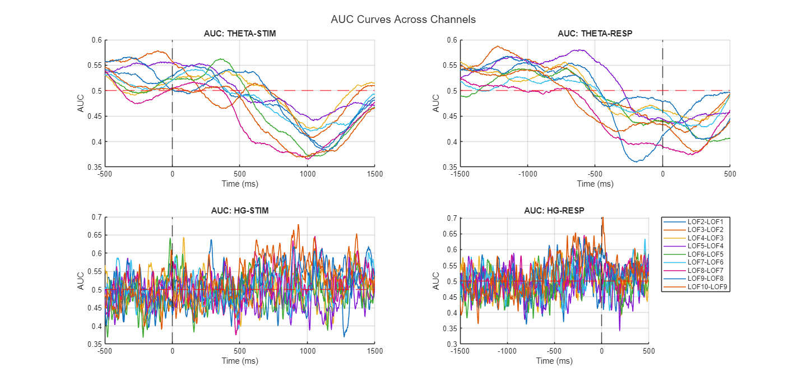
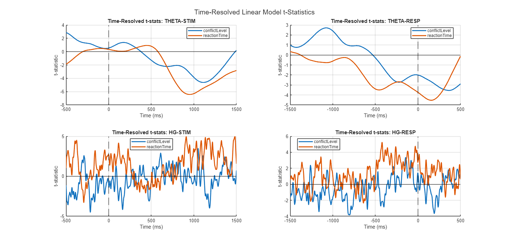
Analysis write-up (published MATLAB report)
Open in a new tab / download ↗PROJECT ARCHIVE · 06
A 2-D finite-element model of how a topical drug diffuses from the skin surface into the dermis.
Solo project — BMEN 5251, Finite Element Methods for Biomedical Engineers.
The region of interest is a trapezoid running from the transdermal layer about 3.5 mm down into the dermis, widening with depth to capture lateral spread. The surface uses a Dirichlet boundary with a time-decaying source c0e−kt, the bottom is held at zero, and the sides are no-flux Neumann boundaries. A triangular mesh (~500 nodes) is generated with the Barocas MyMesher routine; the solver uses linear basis functions, 3-point Gauss quadrature, assembled mass and stiffness matrices, and ode15s over 72 hours.
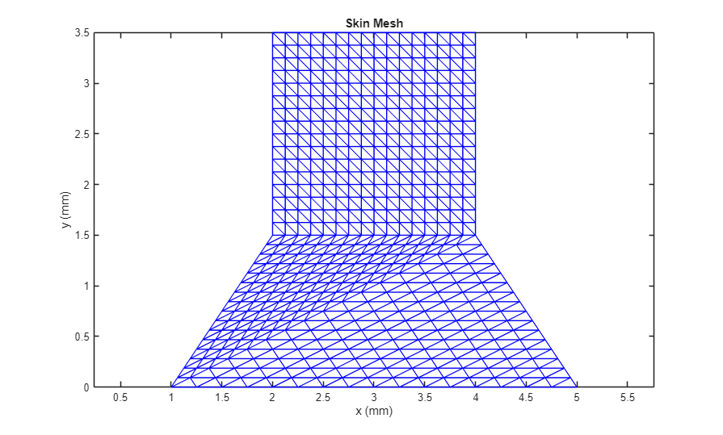
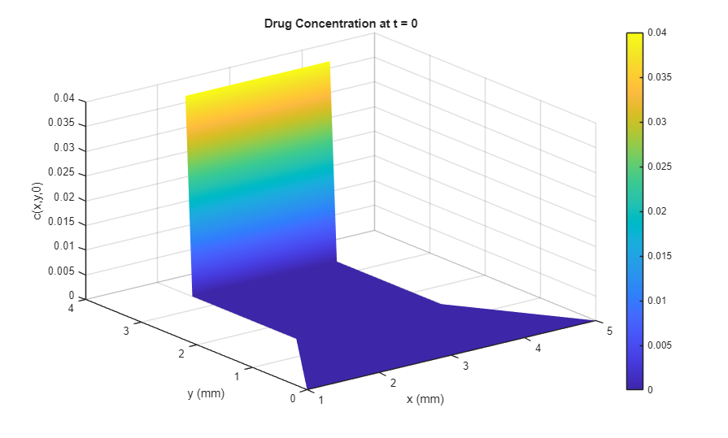
Concentration marches down the region of interest over 72 hours. Tracking the surface-boundary concentration until it reaches half of c0 reproduces the analytical first-order half-life to within 0.08%, validating the FEM implementation.
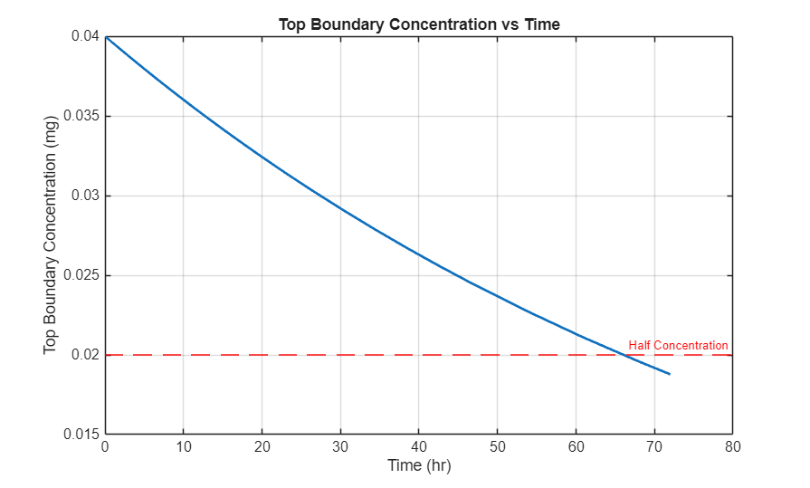
Final project write-up
Open in a new tab / download ↗PROJECT ARCHIVE · 07
A finite-element cable-equation model of action-potential propagation down an active nerve fiber.
Solo project — BMEN 5251, Finite Element Methods for Biomedical Engineers.
The fiber is a 10 cm cylinder (101 nodes), treated as one-dimensional with sealed, zero-flux ends. Hodgkin–Huxley ionic currents (INa, IK, Ileak) with m, h, n gating are carried over from prior BMEN 5411 work. An external stimulus at x = 3 cm is a 20 kHz pulsed sinusoid (0.25 ms on/off, 2 mA). The FEM assembles element-wise mass and stiffness matrices with 2-point Gauss quadrature, integrates the gating variables alongside voltage, and solves with ode15s over 20 ms. Resting potential is −65 mV; threshold is −55 mV.
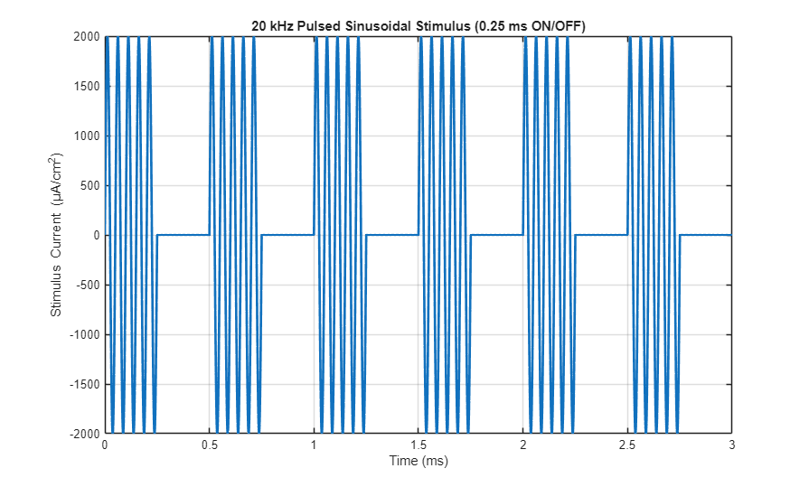
The stimulus drives the fiber midpoint above threshold and a full action potential fires. Snapshots of voltage along the fiber from 1 to 20 ms show the spike initiating at the stimulus site and propagating in both directions toward the sealed ends.
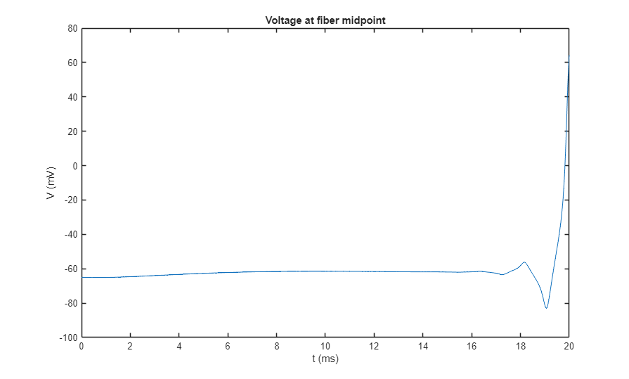
Midterm project write-up
Open in a new tab / download ↗AREA · 03 OF 05 · HOBBIES ARCHIVE
[Placeholder — intro to whatever lives here outside of engineering: art, music, writing, design, film, sports, etc.]
Duplicate the gallery card template above (and its matching detail section) to add more.
HOBBIES ARCHIVE · 01
[Placeholder — one-line subtitle/medium, e.g. "Oil painting" or "Trail running."]
✎ Write the full description here: what it is, how long you've done it, why it matters to you.
HOBBIES ARCHIVE · 02
[Placeholder — one-line subtitle/medium.]
✎ Write the full description here: what it is, how long you've done it, why it matters to you.
AREA · 04 OF 05 · SKILL FEED
My full CV of accolades!
BBmE Biomedical Engineering, minor in Mathematics
University of Minnesota–Twin Cities
December 2026, graduated Summa Cum Laude
High School Diploma
Minnetonka High School
June 2023, graduated Summa Cum Laude with Platinum Bilingual Seal in Mandarin Chinese
Edwards Lifesciences — New Product Development Intern
June 2026 - August 2026 | Worked on the next generation of the SM3 transcatheter mitral valve replacement
Abbott — R&D Co-Op
May 2025 - December 2025 | Worked in Structural Heart for premarket project Stellatus
Medtronic — Engineering Summer Intern
June 2024 - August 2024 | Worked under the Business Process Excellence Team
✎ Add internships, research positions, and leadership roles here.
SWE-MN Scholarship Winner
August 2026
BME Senior Design Showcase -- 1st Prize
April 2026 | Awarded for project PessAssist Device (PAD)
JHU Healthcare Design Competition Finalists -- Advanced Health Division
March 2026 | Awarded for project BowelProbe.
Biz Pitch Finalists presented by Carlson School of Management
October 2025 | Awarded for project PessAssist Device (PAD)
CSE Merit Scholarship
April 2025 | Awarded to a high performing student at the University of Minnesota's College of Science and Engineering who demonstrates a strong academic record, demonstrated leadership skills, campus involvement outside of the traditional classroom, and clear career and future goals.
Tony Diggs Excellence Award for Leadership Development
March 2025 | Awarded to UMN Robotics while I was serving on board for fostering a community and opportunity for technical leadership development and growth.
SWE-MN Intricon Scholarship Winner
June 2024 |
Twin Cities Regional Science Fair 1st Place -- Cellular and Molecular Biology Category
February 2023 |
TonkaHacks Hackathon
November 2022 | Awarded for project CommuniTree
✎ Add internships, research positions, and leadership roles here.
Advanced Bioelectricity and Instrumentation
BMEN5101 | Topics covered include concepts of medical instrumentations, basic sensors and principles, bioelectricity (EEG, Hodgkin-Huxley, Basic Electrophysiology), ECG, and Biopotential electrodes.
Advanced Biomaterials
BMEN5001 |
Biomedical Device Prototyping
BMEN2151 | Topics include using FEM to obtain a numerical solution to 1D and 2D differential equations, including transient and nonlinear problems and understanding the mathematics behind finite element modeling.
CAD for Biomedical Engineers
BMEN4013 |
Digital Signal Processing
EE4541 |
Neural Engineering
BMEN5411 |
Neural Decoding and Interfacing
BMEN5413 |
Mathematical Analysis of Biological Networks
MATH5445 |
Finite Element Methods for Biomedical Engineeers
BMEN5251 |
Fundamentals of Pharmacology
PHAR3700 |
Graph Theory and Nonenumerative Combinatorics
MATH5707 |
Principles of Physiology with Lab
PHSL3061&PHSL3071 |
Cardiovascular Devices
BMEN5601 |
AREA · 05 OF 05 · TRANSMIT
Open to opportunities in medical device design, R&D, and biomedical innovation.